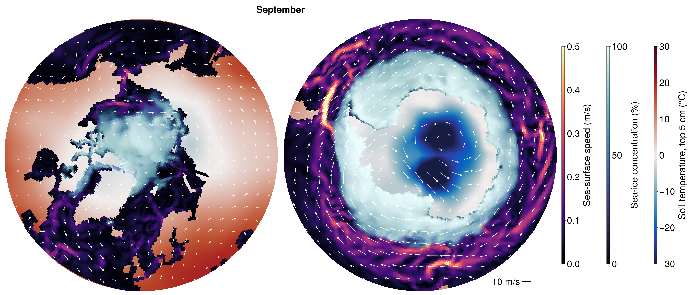

Coarse CMIP
This example runs one year of the coarse fully coupled configuration, config/longrun_configs/cmip_coarse.yml, on one GPU, and plots the monthly-mean wind over the polar oceans, their sea ice, and the surrounding land.
Setup
| Component | Model | Grid | Time step |
|---|---|---|---|
| Atmosphere | ClimaAtmos | cubed sphere, 6 × 6 elements per panel (about 5°), 10 levels to 30 km | 600 s |
| Land | ClimaLand (soil, canopy, snow) | the atmosphere's surface | 600 s |
| Ocean | Oceananigans | eORCA1 tripolar grid (1°), 10 levels to 5500 m | 3600 s |
| Sea ice | ClimaSeaIce | the ocean grid | 3600 s |
The atmosphere has the eddy-diffusivity turbulence and 0-moment microphysics of config/atmos_configs/climaatmos_edonly.yml, all-sky radiation every hour, fixed trace gases, and no aerosols or gravity-wave drag. toml/cmip_coarse.toml weakens the subgrid variance of its cloud scheme for the coarse grid and sets 150 cloud droplets per cm³, and the shortwave sees the clouds without the scaling for unresolved inhomogeneity. The land reads the MODIS monthly leaf-area-index climatology. With 10 levels, the ocean uses simplified_ocean_closure: convective adjustment, a background vertical diffusivity, and biharmonic horizontal viscosity. Fluxes are exchanged every 600 s, those between the atmosphere and the ocean or sea ice on the exchange grid (see Exchange (intersection) grid). The run starts on 1 January 2010 from a dry atmosphere at rest whose temperature decays from 290 K at the surface to 220 K aloft (DecayingProfile), and from EN4 (ocean) and ECCO4 (sea ice), in Float32.
Running
Start Julia in a new environment, on a machine with an NVIDIA GPU:
CLIMACOMMS_DEVICE=CUDA julia --project=coarse_cmipInstall the packages once:
using Pkg
Pkg.add(name = "ClimaCore", version = "1.0.5")
Pkg.add(["ClimaCoupler", "ClimaAtmos", "ClimaLand", "Oceananigans", "ClimaSeaIce", "ConservativeRegridding"])
Pkg.add(["ClimaComms", "CUDA"]) # For using an NVIDIA GPU
Pkg.add(["ClimaAnalysis", "CairoMakie"]) # For plottingThen load them, shorten the run from 30 years to one, and run it:
using ClimaCoupler
# The component models and the packages that load ClimaCoupler's extensions for them
import ClimaAtmos, ClimaLand, Oceananigans, ClimaSeaIce, ConservativeRegridding
import ClimaComms
ClimaComms.@import_required_backends
config_file = joinpath(pkgdir(ClimaCoupler), "config", "longrun_configs", "cmip_coarse.yml")
config_dict = Input.get_coupler_config_dict(config_file)
config_dict["t_end"] = "365days"
cs = CoupledSimulation(config_dict)
run!(cs)The first run will take some time to setup and compile, but once it is running it should finish in ~1 hour depending on your card. Every component writes monthly means to output/cmip_coarse, about 1 GB in all.
Plotting
The figure shows September, near the smallest extent of Arctic sea ice and the largest of Antarctic sea ice: monthly means of the wind at the lowest model level (about 250 m) as white arrows, over the sea-ice concentration, the ocean surface speed and the soil temperature of the top 5 cm, poleward of 45°N (left) and 45°S (right). Each map is the orthographic projection onto the plane tangent at its pole.
using CairoMakie, Dates, Oceananigans
import ClimaAnalysis
using LinearAlgebra: normalize
month = 9
month_start = DateTime(2010, month)
# Atmosphere and land monthly means are stamped at the start of their month, ocean and sea-ice ones at the end
atmos = ClimaAnalysis.SimDir(cs.dir_paths.atmos_output_dir)
uas, vas = map(("uas", "vas")) do short_name
var = get(atmos; short_name, reduction = "average", period = "1M")
return ClimaAnalysis.slice(var; time = month_start)
end
land = ClimaAnalysis.SimDir(cs.dir_paths.land_output_dir)
tsoil = get(land; short_name = "tsoil", reduction = "average", period = "1M")
tsoil = ClimaAnalysis.slice(tsoil; time = month_start, z = 0) # the top layer
ocean_file = joinpath(cs.dir_paths.ocean_output_dir, "ocean_surface.jld2")
ice_file = joinpath(cs.dir_paths.ice_output_dir, "seaice_surface.jld2")
U, V = (FieldTimeSeries(ocean_file, name; backend = OnDisk())
for name in ("sea_surface_zonal_velocity", "sea_surface_meridional_velocity"))
ℵ = FieldTimeSeries(ice_file, "ice_concentration"; backend = OnDisk())
n = findfirst(==(month_start + Month(1)), U.times)
grid = U.grid
Nx, Ny = grid.Nx, grid.Ny
speed = hypot.(interior(U[n], :, :, 1), interior(V[n], :, 1:Ny, 1))
concentration = interior(ℵ[n], :, :, 1)
# Position on the map [Earth radii] of longitude λ and latitude φ around the pole of hemisphere h (1 north,
# -1 south), and the directions of east and north there. The maps reach 45° latitude.
project(λ, φ, h) = Point2f(cosd(φ) * sind(λ), -h * cosd(φ) * cosd(λ))
east(λ, h) = Vec2f(cosd(λ), h * sind(λ))
north(λ, φ, h) = sind(φ) * Vec2f(-sind(λ), h * cosd(λ))
radius = cosd(45)
# Ocean cells colored by sea-ice concentration over surface speed, drawn as quadrilaterals between their
# corners over the soil temperature
speed_colors, ice_colors, speed_range = cgrad(:magma), cgrad(:ice), (0, 0.5)
soil_colors, soil_range = cgrad(:balance), (-30, 30)
colors = map(speed, concentration) do s, c
ocean = speed_colors[min(s / speed_range[2], 1)]
return RGBAf(Makie.weighted_color_mean(c, ice_colors[c], ocean))
end
wet = grid.immersed_boundary.bottom_height[1:Nx, 1:Ny, 1] .< 0
latitudes = φnodes(grid, Center(), Center(), Center())
corner_longitudes = λnodes(grid, Face(), Face(), Center())
corner_latitudes = φnodes(grid, Face(), Face(), Center())
corners(i, j) = ((i, j), (i % Nx + 1, j), (i % Nx + 1, j + 1), (i, j + 1))
# Arrows on a square grid of each map, outside the latitude rows at the poles, where the wind has no
# direction. An arrow is `scale` Earth radii long per m s⁻¹.
spacing, scale = 0.062, 4.5e-3
inner_radius = cosd(ClimaAnalysis.latitudes(uas)[2])
offsets = -radius:spacing:radius
tails = [Point2f(x, y) for x in offsets, y in offsets if inner_radius < hypot(x, y) < radius]
style = (shaftwidth = 1.5, tipwidth = 7, tiplength = 8)
fig = Figure(size = (2800, 1200), fontsize = 38)
Label(fig[0, 1:2], monthname(month); font = :bold)
maps = map(((1, 1), (2, -1))) do (column, h)
ax = Axis(fig[1, column]; aspect = DataAspect(), limits = (-radius, radius, -radius, radius))
hidedecorations!(ax)
hidespines!(ax)
soil = ClimaAnalysis.resampled_as(tsoil; lon = collect(-180.0:180), lat = sort(h .* collect(45.0:90)))
soil_points = project.(ClimaAnalysis.longitudes(soil), ClimaAnalysis.latitudes(soil)', h)
surface!(ax, first.(soil_points), last.(soil_points), zeros(size(soil_points));
color = soil.data .- 273.15, colormap = soil_colors, colorrange = soil_range, shading = NoShading)
cells = filter(I -> wet[I] && h * latitudes[I] >= 45, CartesianIndices(wet))
vertices = [project(corner_longitudes[c...], corner_latitudes[c...], h)
for I in cells for c in corners(Tuple(I)...)]
quads = permutedims(reshape(1:length(vertices), 4, :))
mesh!(ax, vertices, [quads[:, [1, 2, 3]]; quads[:, [1, 3, 4]]];
color = repeat(colors[cells]; inner = 4), shading = NoShading)
directions = map(tails) do p
λ, φ = atand(p[1], -h * p[2]), h * acosd(hypot(p...))
eastward, northward = uas([λ, φ]), vas([λ, φ])
wind = eastward * east(λ, h) + northward * north(λ, φ, h)
return scale * hypot(eastward, northward) * normalize(wind)
end
arrows2d!(ax, tails, directions; color = :white, style...)
return ax
end
reference = radius * Point2f(0.75, -0.93)
arrows2d!(maps[2], [reference], [Vec2f(10scale, 0)]; color = :black, style...)
text!(maps[2], reference - Vec2f(0.012, 0); text = "10 m/s", align = (:right, :center))
colorbars = GridLayout(fig[1, 3]; default_colgap = 60)
Colorbar(colorbars[1, 1]; colormap = speed_colors, limits = speed_range,
label = "Sea-surface speed (m/s)", height = Relative(0.8))
Colorbar(colorbars[1, 2]; colormap = ice_colors, limits = (0, 100),
label = "Sea-ice concentration (%)", height = Relative(0.8))
Colorbar(colorbars[1, 3]; colormap = soil_colors, limits = soil_range,
label = "Soil temperature, top 5 cm (°C)", height = Relative(0.8))
save("polar_winds.png", fig; px_per_unit = 1)